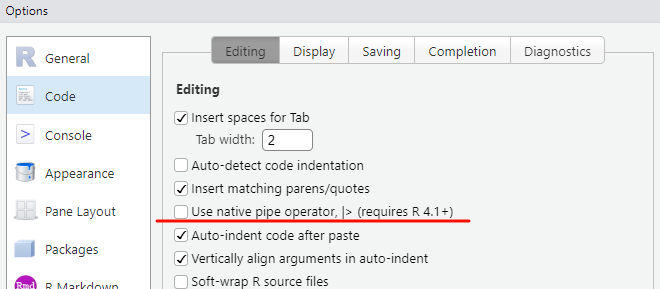

tidyverse::tidyverse_packages()
## [1] "broom" "conflicted" "cli" "dbplyr"
## [5] "dplyr" "dtplyr" "forcats" "ggplot2"
## [9] "googledrive" "googlesheets4" "haven" "hms"
## [13] "httr" "jsonlite" "lubridate" "magrittr"
## [17] "modelr" "pillar" "purrr" "ragg"
## [21] "readr" "readxl" "reprex" "rlang"
## [25] "rstudioapi" "rvest" "stringr" "tibble"
## [29] "tidyr" "xml2" "tidyverse"15 tidyverse简介
tidyverse是R语言里面的一个R包（或者叫多个R包），前面我们已经给大家演示了如何安装这个R包，下面给大家单独简单介绍下这个R包，为什么要单独要单独介绍它呢？因为它有一些独特的特性，和基础的R使用方法不太一样。
15.1 tidyverse简介
tidyverse是专门为数据科学（数据整理、数据清洗、数据读取和保存、数据可视化等）而设计的系列R包。加载它即可加载以下R包：
其中比较重要的有：
- tibble
- tidyr
- dplyr
- ggplot2
- forcats
- stringr
- lubridate
- purrr
这些包共享高级设计理念和低级语法以及数据结构，因此学习一个包就可以更轻松地学习下一个包。
tidyverse聚焦于设计可以被广泛使用和轻松理解的R包和函数。无论是过去还是现在，很大一部分R用户都不是软件或工具创建者，而只是使用工具的人。因此R用户通常没有（或需要）计算机科学背景，并且许多人对编写自己的R包不感兴趣。
在函数命名方面，tidyverse的解决方法是使用描述性和显式的函数名称，而不是那些简短的和隐式的函数名称。常见方法通过单个动词实现，动词-名词组合式命名也非常有效。比如：
filter：筛选行arrange：排列行select：选择列mutate：新建列rename：重命名列
15.2 管道符简介
tidyverse另一个比较特殊的特性是管道符（%>%）的使用。管道符可以把多个操作连接起来，像一个管道一样让数据流通。
使用ggplot2自带的数据进行说明，这是一个不同汽车的耗油量数据。
library(tidyverse)
## ── Attaching core tidyverse packages ──────────────────────── tidyverse 2.0.0 ──
## ✔ dplyr 1.1.4 ✔ readr 2.1.5
## ✔ forcats 1.0.0 ✔ stringr 1.5.1
## ✔ ggplot2 3.5.2 ✔ tibble 3.2.1
## ✔ lubridate 1.9.4 ✔ tidyr 1.3.1
## ✔ purrr 1.0.4
## ── Conflicts ────────────────────────────────────────── tidyverse_conflicts() ──
## ✖ dplyr::filter() masks stats::filter()
## ✖ dplyr::lag() masks stats::lag()
## ℹ Use the conflicted package (<http://conflicted.r-lib.org/>) to force all conflicts to become errors
mpg
## # A tibble: 234 × 11
## manufacturer model displ year cyl trans drv cty hwy fl class
## <chr> <chr> <dbl> <int> <int> <chr> <chr> <int> <int> <chr> <chr>
## 1 audi a4 1.8 1999 4 auto… f 18 29 p comp…
## 2 audi a4 1.8 1999 4 manu… f 21 29 p comp…
## 3 audi a4 2 2008 4 manu… f 20 31 p comp…
## 4 audi a4 2 2008 4 auto… f 21 30 p comp…
## 5 audi a4 2.8 1999 6 auto… f 16 26 p comp…
## 6 audi a4 2.8 1999 6 manu… f 18 26 p comp…
## 7 audi a4 3.1 2008 6 auto… f 18 27 p comp…
## 8 audi a4 quattro 1.8 1999 4 manu… 4 18 26 p comp…
## 9 audi a4 quattro 1.8 1999 4 auto… 4 16 25 p comp…
## 10 audi a4 quattro 2 2008 4 manu… 4 20 28 p comp…
## # ℹ 224 more rowscty：城市hwy：耗油量displ：发动机排量drv：驱动系统，前驱、后驱、四驱model：车辆型号，共38种车型cyl：发动机缸数class：车辆类型，双座、SUV、小型汽车等
假如我们要进行以下操作：
1.选择”manufacturer”,“cyl”,“drv”,“hwy”这4列； 2.筛选manufacturer是”audi”的行； 3.将manufacturer重命名为manuf; 4.按照drv进行分组，计算每组的hwy的平均值
如果是在R语言基础语法中，可以像下面这样写：
tmp <- mpg[mpg$manufacturer == "audi",c("manufacturer","cyl","drv","hwy")]
colnames(tmp)[1] <- "manuf"
tapply(tmp$hwy, tmp$drv, mean)
## 4 f
## 25.27273 28.28571这样做没什么问题，但是中间步骤需要不停地取名字（如果步骤很多的话就要取很多名字），而且使用的语法和函数形式也不够统一，不够“优雅”。
但是使用tidyverse和管道符，可以像下面这样写：
# tidyverse中变量的名字不用加引号，
# 但是如果变量名字中有中文或者空格，建议用``引起来
mpg %>%
select(manufacturer, cyl, drv, hwy) %>% # 选择列
filter(manufacturer == "audi") %>% # 筛选行
rename(manuf = manufacturer) %>% # 重命名
group_by(drv) %>% # 分组
summarise(mm = mean(hwy)) # 分组汇总
## # A tibble: 2 × 2
## drv mm
## <chr> <dbl>
## 1 4 25.3
## 2 f 28.3所有函数使用%>%连接起来，中间不需要取名字，各个函数的名字也十分形象，代码很容易看懂。管道符左侧函数的结果可以作为右侧函数的输入。
我们一步一步的分解看一下：
# 第一步
select(mpg, manufacturer, cyl, drv, hwy)
## # A tibble: 234 × 4
## manufacturer cyl drv hwy
## <chr> <int> <chr> <int>
## 1 audi 4 f 29
## 2 audi 4 f 29
## 3 audi 4 f 31
## 4 audi 4 f 30
## 5 audi 6 f 26
## 6 audi 6 f 26
## 7 audi 6 f 27
## 8 audi 4 4 26
## 9 audi 4 4 25
## 10 audi 4 4 28
## # ℹ 224 more rows
# 第二步
filter(select(mpg, manufacturer, cyl, drv, hwy),
manufacturer == "audi")
## # A tibble: 18 × 4
## manufacturer cyl drv hwy
## <chr> <int> <chr> <int>
## 1 audi 4 f 29
## 2 audi 4 f 29
## 3 audi 4 f 31
## 4 audi 4 f 30
## 5 audi 6 f 26
## 6 audi 6 f 26
## 7 audi 6 f 27
## 8 audi 4 4 26
## 9 audi 4 4 25
## 10 audi 4 4 28
## 11 audi 4 4 27
## 12 audi 6 4 25
## 13 audi 6 4 25
## 14 audi 6 4 25
## 15 audi 6 4 25
## 16 audi 6 4 24
## 17 audi 6 4 25
## 18 audi 8 4 23
# 第三步
rename(filter(select(mpg, manufacturer, cyl, drv, hwy),
manufacturer == "audi"),
manuf = manufacturer)
## # A tibble: 18 × 4
## manuf cyl drv hwy
## <chr> <int> <chr> <int>
## 1 audi 4 f 29
## 2 audi 4 f 29
## 3 audi 4 f 31
## 4 audi 4 f 30
## 5 audi 6 f 26
## 6 audi 6 f 26
## 7 audi 6 f 27
## 8 audi 4 4 26
## 9 audi 4 4 25
## 10 audi 4 4 28
## 11 audi 4 4 27
## 12 audi 6 4 25
## 13 audi 6 4 25
## 14 audi 6 4 25
## 15 audi 6 4 25
## 16 audi 6 4 24
## 17 audi 6 4 25
## 18 audi 8 4 23
# 第四步
group_by(rename(filter(select(mpg, manufacturer, cyl, drv, hwy),
manufacturer == "audi"),
manuf = manufacturer),
drv)
## # A tibble: 18 × 4
## # Groups: drv [2]
## manuf cyl drv hwy
## <chr> <int> <chr> <int>
## 1 audi 4 f 29
## 2 audi 4 f 29
## 3 audi 4 f 31
## 4 audi 4 f 30
## 5 audi 6 f 26
## 6 audi 6 f 26
## 7 audi 6 f 27
## 8 audi 4 4 26
## 9 audi 4 4 25
## 10 audi 4 4 28
## 11 audi 4 4 27
## 12 audi 6 4 25
## 13 audi 6 4 25
## 14 audi 6 4 25
## 15 audi 6 4 25
## 16 audi 6 4 24
## 17 audi 6 4 25
## 18 audi 8 4 23
# 第五步
summarise(group_by(rename(filter(select(mpg, manufacturer, cyl, drv, hwy),
manufacturer == "audi"),
manuf = manufacturer),
drv),
mm = mean(hwy))
## # A tibble: 2 × 2
## drv mm
## <chr> <dbl>
## 1 4 25.3
## 2 f 28.3这种写法能够流畅运行主要得益于tidyverse系列函数的统一设计标准，上面演示的这些函数中，它们的第一个参数都是.data，刚好能够让上一步的结果作为下一步的输入数据，而且还可以省略.data参数。
?select
?filter
?rename所以完整的写法应该是下面这样的，用.表示上一步得到的结果，但是由于tidyverse完美的设计，这种情况下不写第一个参数也完全OK：
mpg %>%
select(.data = . , manufacturer, cyl, drv, hwy) %>%
filter(.data = . , manufacturer == "audi") %>%
rename(.data = . , manuf = manufacturer) %>%
group_by(.data = . , drv) %>%
summarise(.data = . , mm = mean(hwy))
## # A tibble: 2 × 2
## drv mm
## <chr> <dbl>
## 1 4 25.3
## 2 f 28.3并且在Rstudio中，管道符有快捷键，直接按：control+shift+m，即可输入管道符。
tidyverse还有各种人性化的设计，种种优点使其大受欢迎！
%>%管道符其实是magrittr包中的，你需要先加载这个R包才能使用（加载tidyverse会自动加载这个包）。在R语言4.1版本之后，R也引入了原生的管道符：|>，在大多数情况下，原生管道符和tidyverse管道符可以替换使用，但是二者也有一些差别（具体不展开，可参考：比较R中的管道符）。所以，以上代码你写成下面这样也OK:
mpg |> select(manufacturer, cyl, drv, hwy) |>
filter(manufacturer == "audi") |>
rename(manuf = manufacturer) |>
group_by(drv) |>
summarise(mm = mean(hwy))
## # A tibble: 2 × 2
## drv mm
## <chr> <dbl>
## 1 4 25.3
## 2 f 28.3管道符和tidyverse是天生绝配，那基础语法和管道符可以连用吗？答案是可以。但是由于基础语法中的函数设计不如tidyverse那么统一规范，会出现各种初学者搞不懂的报错！所以我建议你只在使用tidyverse时才使用管道符，在基础语法中不要用（大佬例外）。
默认快捷键可修改到底是哪种管道符：

15.3 使用简介
下面用一个简单的示例演示tidyverse中部分函数的用法。更多的用法我会在tidyverse合集中详细介绍。
还是以TCGA官网下载的乳腺癌患者的临床信息为例，该数据包含：患者ID、样本ID、样本类型（normal还是tumor？）、年龄、性别等。
该示例将全部使用tidyverse完成，大家可以和前面介绍的R语言基础语法对数据框的操作进行比较。
加载R包：
library(tidyverse)# 读取文件
library(readxl)
brca_clin <- read_xlsx("F:/R_books/R_beginners/brca_clin.xlsx", col_names = T)
# 查看数据基本情况
glimpse(brca_clin)
## Rows: 20
## Columns: 9
## $ barcode <chr> "TCGA-BH-A1FC-11A-32R-A13Q-07", "TCGA-AC-A2FM-1…
## $ patient <chr> "TCGA-BH-A1FC", "TCGA-AC-A2FM", "TCGA-BH-A0DO",…
## $ sample <chr> "TCGA-BH-A1FC-11A", "TCGA-AC-A2FM-11B", "TCGA-B…
## $ sample_type <chr> "Solid Tissue Normal", "Solid Tissue Normal", "…
## $ initial_weight <dbl> 260, 220, 130, 260, 200, 60, 320, 310, 100, 250…
## $ ajcc_pathologic_stage <chr> "Stage IIA", "Stage IIB", "Stage I", "Stage IA"…
## $ days_to_last_follow_up <chr> "NA", "NA", "1644", "501", "660", "3247", "NA",…
## $ gender <chr> "female", "female", "female", "female", "female…
## $ age_at_index <dbl> 78, 87, 78, 63, 41, 59, 60, 39, 54, 51, 51, 44,…变量名修改：
brca_clin <- brca_clin %>%
rename(weight = initial_weight, stage = ajcc_pathologic_stage,
days = days_to_last_follow_up, age = age_at_index)
colnames(brca_clin)
## [1] "barcode" "patient" "sample" "sample_type" "weight"
## [6] "stage" "days" "gender" "age"选择第5~9列：
brca_clin <- brca_clin %>%
select(5:9)
glimpse(brca_clin)
## Rows: 20
## Columns: 5
## $ weight <dbl> 260, 220, 130, 260, 200, 60, 320, 310, 100, 250, 130, 110, 470,…
## $ stage <chr> "Stage IIA", "Stage IIB", "Stage I", "Stage IA", "Stage IIB", "…
## $ days <chr> "NA", "NA", "1644", "501", "660", "3247", "NA", "NA", "1876", "…
## $ gender <chr> "female", "female", "female", "female", "female", "female", "fe…
## $ age <dbl> 78, 87, 78, 63, 41, 59, 60, 39, 54, 51, 51, 44, 64, 56, 71, 71,…按照age从小到大排序数据框：
brca_clin <- brca_clin %>%
arrange(age)
#brca_clin按照从大到小的顺序排列：
brca_clin <- brca_clin %>%
arrange(desc(age))查看有几个类别，以及每个类别的数量：
brca_clin %>% count(stage)
## # A tibble: 6 × 2
## stage n
## <chr> <int>
## 1 Stage I 3
## 2 Stage IA 3
## 3 Stage IIA 5
## 4 Stage IIB 6
## 5 Stage IIIA 2
## 6 Stage IIIC 1变量重编码和修改：
用case_when：
brca_clin %>%
mutate(stage = case_when(stage == "Stage IIB" ~ "Stage_2",
stage == "Stage IIA" ~ "Stage_2",
stage == "Stage IA" ~ "Stage_1",
stage == "Stage I" ~ "Stage_1",
stage == "Stage IIIA" ~ "Stage_3",
stage == "Stage IIIC" ~ "Stage_3",
.default = NULL
)) %>%
count(stage)
## # A tibble: 3 × 2
## stage n
## <chr> <int>
## 1 Stage_1 6
## 2 Stage_2 11
## 3 Stage_3 3case_when另一种用法：
brca_clin %>%
mutate(stage = case_when(stage %in% c("Stage IIB","Stage IIA") ~ "Stage_2",
stage %in% c("Stage IA","Stage I") ~ "Stage_1",
stage %in% c("Stage IIIA","Stage IIIC") ~ "Stage_3",
)) %>%
count(stage)
## # A tibble: 3 × 2
## stage n
## <chr> <int>
## 1 Stage_1 6
## 2 Stage_2 11
## 3 Stage_3 3或者用case_match:
brca_clin %>%
mutate(stage = case_match(stage,
c("Stage IIB","Stage IIA") ~ "Stage_2",
c("Stage IA","Stage I") ~ "Stage_1",
c("Stage IIIA","Stage IIIC") ~ "Stage_3"
)) %>%
count(stage)
## # A tibble: 3 × 2
## stage n
## <chr> <int>
## 1 Stage_1 6
## 2 Stage_2 11
## 3 Stage_3 3根据年龄进行分组，大于60岁是old，小于等于60岁是young:
# 先看下年龄是不是数值型
glimpse(brca_clin)
## Rows: 20
## Columns: 5
## $ weight <dbl> 220, 260, 130, 200, 70, 470, 260, 130, 320, 60, 90, 100, 200, 2…
## $ stage <chr> "Stage IIB", "Stage IIA", "Stage I", "Stage IIA", "Stage IIA", …
## $ days <chr> "NA", "NA", "1644", "385", "1800", "1972", "501", "214", "NA", …
## $ gender <chr> "female", "female", "female", "female", "female", "female", "fe…
## $ age <dbl> 87, 78, 78, 71, 71, 64, 63, 63, 60, 59, 56, 54, 54, 51, 51, 47,…
is.numeric(brca_clin$age)
## [1] TRUE开始修改：
brca_clin <- brca_clin %>%
mutate(age = ifelse(age>60,"old","young"))
brca_clin %>% count(age)
## # A tibble: 2 × 2
## age n
## <chr> <int>
## 1 old 8
## 2 young 12NA修改(这个数据框里的NA是字符型，并不是真正的NA)：
brca_clin <- brca_clin %>%
mutate(days = ifelse(days == "NA",NA,days))
brca_clin %>% select(days)
## # A tibble: 20 × 1
## days
## <chr>
## 1 <NA>
## 2 <NA>
## 3 1644
## 4 385
## 5 1800
## 6 1972
## 7 501
## 8 214
## 9 <NA>
## 10 3247
## 11 1321
## 12 1876
## 13 2442
## 14 707
## 15 5749
## 16 1206
## 17 <NA>
## 18 660
## 19 <NA>
## 20 <NA>15.4 其他示例
R语言可视化系列合集：
purrr的使用（等我在tidyverse合集中再详细介绍）：
- 批量保存图片：免疫浸润结果可视化
- 批量建模：R语言亚组分析及森林图绘制
- 批量t检验：R语言倾向性评分：回归和分层
- ……
详细的R包介绍推文：